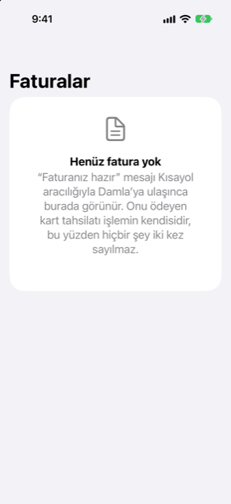

Kılavuz › Planlama
Yaklaşan faturalar
Bir mesajla duyurulan bir faturanın nasıl hatırlandığı ve sonra kart harcamasıyla nasıl kapatıldığı.
Yaklaşan faturalar, Damla'nın bir faturayı bir mesaj onu duyurduğu andan ("faturanız hazır") onu ödeyen harcama gelene kadar tuttuğu yerdir. Duyurunun kendisi harcama değildir: hiç para hareket etmemiştir. Faturayı ödeyen kart ya da banka harcaması tek gerçek işlemdir ve faturayı burada kapatır; böylece hiçbir şey iki kez sayılmaz.

Ne zaman kullanılır
- Bir hizmet kuruluşu ya da başka bir sağlayıcı "faturanız hazır" mesajı gönderir ve onu harcama olarak kaydetmeden hatırlanmasını istersiniz.
- Duyurulmuş ama henüz tahsil edilmemiş her şeyi tutarları ve vade tarihleriyle görmek istersiniz.
- Bir fatura yanlışlıkla not edilmiştir ve onu kaldırmak istersiniz.
Adım adım
- Fatura bildiriminin Damla'ya Kısayol otomasyonunuz aracılığıyla ulaşmasına izin verin (ya da mesajı Cümleyle ekle içine yapıştırın).
- Plan sekmesini açın ve Yaklaşan faturalar'a dokunun. Sayfanın başlığı Faturalar okur; Bugün, içinde yaklaşan faturalar sözleri geçen ve bu listenin de açıldığı bir bildirim gösterir.
- Ayrıntılarını görmek için bir faturaya dokunun: tutar, vade tarihi, ait olduğu müşteri hesabı, döküm ve — öğrendiğinde — o sağlayıcıyı genellikle hangi kart ya da hesabın ödediği.
- Harcama geldiğinde (bir kart uyarısı ya da bir ekstre satırı), Damla onu faturayla eşleştirir ve fatura aşağıya Ödenen'e iner. Yapmanız gereken bir şey yoktur.
- Kapatılan işlemi Etkinlik'te kontrol edin: faturanın bir dökümü vardıysa, sağlayıcının harcaması artık faturanın kategorilerini taşır.
Fatura nasıl kapanır
- Eşleşen harcama, faturanın tek işlemidir. Faturanın dökümü tam olarak toplamına eşitse, o tek harcama döküm satırları boyunca kategorilere bölünür. Elektrik, su, soğutma, doğalgaz, internet, telefon ve kanalizasyon Faturalar ve giderler'e gider (böyle bir kategoriniz yoksa Giderler). Konut gideri Konut'a gider (ya da Kira, ya da Faturalar ve giderler). Bunların hiçbirine uymayan bir satır, harcamanın kaydedildiği kategoriyi korur.
- Fatura sonra ödendi olarak işaretlenir ve Damla o sağlayıcıyı hangi kartın ödediğini hatırlar.
- Aynı faturanın anımsatıcıları ("vadesi geldi", "gecikti") yalnızca faturanın vade tarihini günceller; asla ikinci bir fatura eklemezler.
- Damla bir sağlayıcıyı hangi kartın ödediğini öğrendikten sonra, o sağlayıcının açık bir faturası zaten tahmininizdedir: bir kart için, para o kartı ödeyen hesaptan kartın vade tarihinde çıkar, bildirimin geldiği anda değil.
Nerede görürsünüz
- Bugün: içinde yaklaşan faturalar sözleri geçen bildirim bu sayfayı açar.
- Plan, Yaklaşan faturalar: aynı faturalar, her biri dökümüyle ve neyin ödendiğiyle. Açık faturaların tümü tek para birimindeyken, üstteki bir kart toplamlarını verir.
- Ayarlar, Son uyarılar: her bildirim ve anımsatıcı, not edilme gerekçesiyle.
- Tahmin (Bugün'den, Önünüzdeki bakiyeniz), ödeyen hesap bilindiğinde faturayı bir ödeme olarak gösterir.
Bir faturanın biçimi
Gördüğünüz faturalar ve tutarlar size ait olduğundan, burada hesaplanmış bir örnek verilmemiştir. Biçim şudur: bir bildirim bir toplamla ve isteğe bağlı bir dökümle gelir; fatura Yaklaşan altında bekler; tek bir harcama onu öder; harcama dökümün kategorilerine bölünür; fatura Ödenen'e geçer.
Bilmekte fayda var
- Tahsil edilene kadar bir fatura bir işlem değildir: harcama raporları onu saymaz.
- Kapanmış bir harcamayı ekleyen uyarıyı geri alırsanız (Ayarlar, Son uyarılar içinde), işlem silinir ve faturanın borcu yeniden doğar.
- Fatura tekrar ediyorsa, onun yerine Gelir ve faturalar içinde kurun: orada her 3 ayda ya da daha seyrek tekrar eden her şey, her ay ne kadar ayrılacağını hesaplayan Ayır'da sayılır.
İlgili
- Tekrarlayan gelir ve faturalar
- Otomatik yakalama nasıl çalışır
- Damla'nın neyi yok saydığı ve bir uyarıyı geri almak
- Kredi kartları
Anlaşılmayan ya da eksik bir şey mi var? support@raveniq.ai adresine yazın ve hangi sayfa olduğunu belirtin.